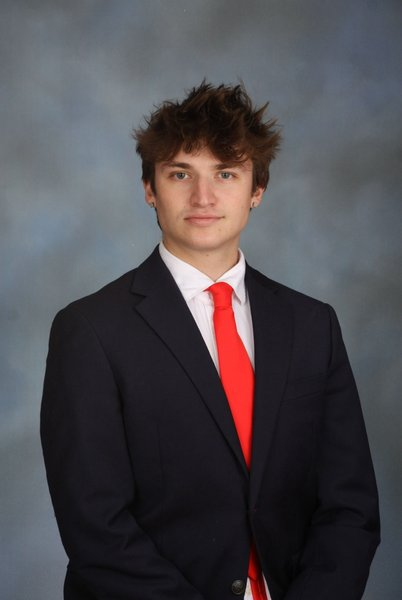

Orlando, Florida · Open for client work

Clayton Camera
Technical founder and software engineer. I build the websites, software and operating systems behind businesses — from customer acquisition to compute orchestration.
I’m based in Orlando, Florida, and work across several ventures: co-founder & managing member of Ascent Vision, founder of KnockFiber and OrbitRoute, and CTO & managing partner at Practically Natty. My work spans search visibility, recruiting, AI, commerce and software infrastructure.
The common thread is practical: understand how a business works, build the missing system, and make the result measurable. I handle architecture, implementation, integrations and the details that keep a product useful after launch.
Current focus · October 2026
The work
What Clayton Camera builds
A selection of ventures, public products and research projects. Open a project to see its current capabilities and status; research results belong to the linked scorecards.
Ascent Vision
A marketing company co-founded with Grayson Sorrentino. We work on search visibility, websites and lead systems for service businesses, connecting useful content and clear inquiry paths with follow-up and reporting.
OrbitRoute
A compute-routing platform with live orbital tracking, workload modeling, APIs and SDKs. It compares cost, latency and orbital constraints while keeping modeled capacity distinct from capacity available to buy. Orbital execution remains simulated; the public comparator recommends terrestrial cloud when the modeled economics favor it.
Practically Natty
Peptide e-commerce operation on WooCommerce with a custom operations plugin: rewards engine, promotion engine with tiered sales and bundles, inventory and COGS tracking, and a self-service affiliate hub.
KnockFiber
Independent fiber-sales recruiting for individual reps, crews, blitz teams and agencies. English and Spanish application paths connect candidates with partner sales organizations. KnockFiber is an independent recruiting business; placement, territory and acceptance depend on the partner and role. The site also carries plain-language guides, such as how fiber sales work and what door-to-door sales jobs involve.
PeptiDex
A structured peptide and compound reference with searchable profiles, research categories, side-by-side comparisons, linked scientific references and a reconstitution calculator. The live library provides the current records and linked references.
BTC Intelligence Brain
A public Bitcoin forecast ledger that scores itself against a naive baseline. The linked scorecard publishes the current sample size, accuracy and baseline comparison with its source timestamp, including results that fail to show an edge.
Universal Analyst Engine
Multi-domain narrative intelligence research that turned unstructured source material into comparable analysis. Its backend was shelved on October 7, 2026; the page is kept as an archive.
PersonalVault
A personal document vault prototype that explored AES-256-GCM encryption in the browser, encrypted storage and document organization. Its backend was shelved on October 7, 2026.
ULTRON
A local agent prototype that proposes actions for human approval, with an approval queue, a hash-chained audit log and a kill switch.
Website delivery & creative development
Beyond the venture portfolio
The work also includes websites for other businesses and interactive design concepts.
Diogo Fitness
Diogo Fitness (Diogo Fit) is one-to-one online fitness coaching from Diogo Camera, based in South Florida, for clients anywhere in the world. Its website was delivered through Ascent Vision: a page for every state and the biggest metros, training guides with their sources, and an application by Instagram, email or form. A practical example of connecting a business website to its next customer conversation. Its page on online fitness coaching in South Florida shows how the metro data is used.
RAIDEN
An artist-site concept combining a playable browser DJ booth, generative storm visuals and music, press and booking layouts. It demonstrates interactive web design; artist content and commercial rollout remain in development.
Method
How he works
Ship live, then prove it. Public products have links you can inspect. When an audit found a pricing constant on OrbitRoute with the wrong sign, the fix wasn't softer wording — it was correcting the number and publishing a comparison that recommends the competitor.
Make the result measurable. Define what success means before building. Keep source timestamps, clear ownership and useful reporting close to the workflow so the team can judge what improved.
Honest instruments. A forecast tool that can't beat a coin flip should tell you it can't beat a coin flip. Earnings claims stay out of recruiting feeds. That discipline is enforced by guard tests in CI, not by good intentions.
Writing
Notes from shipping live systems
Write-ups on what actually broke, what the fix was, and the numbers as they are rather than as they'd read best.
Building a search program for an online coach from public data
An online coach has no storefront, so there is no address to put on a map and no neighborhood to be "near." I helped build the site and search program for Diogo Fitness, an online fitness coach in…
Four times my own verification lied to me in five days
Everything I shipped in the last five days was verified before I called it done. Four of those verifications were wrong, in the way that is hardest to catch: the check reports success in exactly the dimension…
I pointed 30 agents at my own websites and told them to prove each other wrong
I own six domains. Across three working sessions I wired five of them into a single person entity: one @id, defined once, referenced by every property, so that search engines resolve one person instead…
The dry run that caught 25 fabricated reply threads
An agent-drafted outreach queue was about to open 25 cold emails with a Re: — to companies that had never been contacted. What a dry run has to print to catch a well-formed lie.
When your name is also a thing: entity SEO for an ambiguous name
The Claytons that outrank me are towns, and page one of my own name query is their webcams. That's an entity-disambiguation problem, not a keyword problem — and it has a different fix.
Common questions
About Clayton Camera
Who is Clayton Camera?
Clayton Camera is a technical founder and software engineer based in Orlando, Florida. He builds AI systems, autonomous agents, trading research infrastructure, and full-stack commerce software, and runs several ventures in parallel — OrbitRoute, Practically Natty, KnockFiber, PeptiDex, and the BTC Intelligence Brain among them. He works across software, recruiting, commerce and marketing, including Ascent Vision, which he co-founded with Grayson Sorrentino.
What does Clayton Camera build?
Live software systems rather than prototypes: an orbital-compute routing platform, a peptide e-commerce operation with a custom operations plugin and affiliate engine, a bilingual multi-market fiber recruiting platform, a structured peptide research reference, a self-scoring public Bitcoin forecast ledger, and websites and lead systems for service businesses through Ascent Vision.
Is Clayton Camera available for client work?
Yes. Engagements run through workwithclayton.com and start with a fixed-fee audit that puts a dollar figure next to every revenue leak and every piece of manual work worth automating, ranked by speed-to-cash. The audit credits toward the build if you move forward.
Where is Clayton Camera based?
Orlando, Florida, United States. He works remotely with clients and operates on Eastern time.
Is this the same as the Clayton traffic cameras?
No. Searching the exact phrase “Clayton Camera” also returns live traffic and weather cameras for the towns of Clayton in New York, North Carolina, and California, plus unrelated photography businesses. This site is about Clayton Camera the person — a software founder, not a webcam.
Contact
Get in touch
For client work, start at workwithclayton.com. For recruiting partnerships, visit KnockFiber. For technical relationships and other inquiries, connect on LinkedIn.